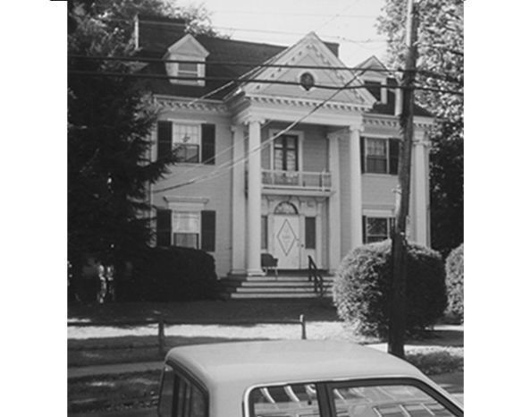

Chapter 18 on the roll
The Beta Beta


- Position on the roll#18
- InstitutionTrinity College
- Chartered1880
- StatusActive since 1880
- Coat of armsfull-size PDF
Notable brothers of the Beta Beta
In the archive
Pages that name the Beta Beta Chapter or its institution.
Named on 897 pages across 341 volumes of the archive.
Y of Psi Upsilon to succeed the Beta Beta Society of Trinity College. It was moved by Bro. F. S. Bangs (A), to refer the subject to a Special Com mittee of two graduates and three undergraduates. The Chair appointed th…
…ess. Bro. D. B. Willson (BB '79) presented the following petition from the Beta Beta Chapter, which was referred to the Committee on the Annual Com munication : To tlie Forty-Seventh General Convention of the Psi Upsilon Fraternity : Bketheen…
…'ob ITS AFFILIATION WITH THE Psi UpSILON FRATERNITY. Inatj&tjeation of the Beta Beta Chapter, etc. THE BETA BETA. (From "American College Frater-nities," 1879.) BY WM. BAIMOND BAIED. The " Order of Beta Beta" is a local fraternity at Trmity C…
…spondenceto Mr. Henry M. Dibble, lock box 11, Ithaca, N. Y. 18. BETA BETA (Trinity College, 1880).� Corres pondence to Mr. Heber Hoff, Box 736, Hartford, Conn. [for GRADUATE ASSOCIATIONS fBZ THIPD PAGE.]
Page8…, to Chi Chapter of Psi Upsilon, lock box 11, Ithaca, N. Y. 18. BETA BETA (Trinity College, 1880).� Coitcspondence to Mr. Herbert Hoff, box 736, Hartford, Conn. THE GRADUATE ASSOCIATIONS. 1. The Psi Upsilon Alumni Association of Detrdit (18…
Page8…irmed. Resolved, &c.. That in the death of Rev. Edwin Emerson John son, of Trinity College, the Fraternity has lost a worthy brother and one who, both as an eminent scholar and as a true gentleman, represented the best elements of a loyal P…
Page13…he Eev. Paul Ziegler, (Beta Beta 1872), was vale dictorian of his class in Trinity College, and is now the rector of St. Peter's Episcopal church. He is also principal of St. Paul's grammar school, an excellent preparatory school for boys,…
Page8…x 1452, Ithaca, N. Y. Beta Beta (Trinity College, 1880)� Correspondence to Beta Beta Chapter of Psi Upsilon, Trinity College, Hartford, Conn. GRADUATE ASSOCIATIONS. I. The Psi Upsilon Association of De troit (1878). President, C. M. Davison;…
Page13…x 1452, Ithaca, N. Y. Beta Beta (Trinity College, i88o)� Correspondence to Beta Beta Chapter of Psi Upsilon, Trinity College, Hartford, Conn. GRADUATE ASSOCIATIONS. I. The Psi Upsilon Association of De troit (1878). President, C. M. Davison;…
Page13…y made the current of Psi Upsilon historj'- flow back over thirty years of Trinity College's ex istence. Though the latest born of the fair daughters of Psi Upsilon, the Beta Beta has already proved herself as comely, as sage, and as sturdy…
Page80…ert P. Jacobs, 4 Mechanics' Hall, Detroit, Mich.' Rochester University and Trinity College each have four Psi U's on the faculty ; Rochester, Professors S. A. Lattimore, T., '68, George M. Forbes, T., '78, I. F. Quinby, T., '64, and A. H. M…
…x 1452, Ithaca, N. Y. Beta Beta (Trinity College, 1880)� Correspondence to Beta Beta Chapter of Psi Upsilon, Trinity College, Hartford, Conn. Eta (Lehigh University, 1884) -^Corres pondence, to Eta Chapter of Psi Upsilon, Bethlehem, Pa. GRADU…
Page17…x 1452, Ithaca, N. Y. Beta Beta (Trinity College, 1880)� Correspondence to Beta Beta Chapter of Psi Upsilon, Trinity College, Hartford, Conn. Eta (Lehigh University, 1884)�Corres pondence, to Eta Chapter of Psi Upsilon, Bethlehem, Pa. GRADUAT…
Page13…x 1452, Ithaca, N. Y. Beta Beta (Trinity College, 1880)� Correspondence to Beta Beta Chapter of Psi Upsilon, Trinity College, Hartford, Conn. Eta (Lehigh University, 1884)�Corres pondence, to Eta Chapter of Psi Upsilon, Bethlehem, Pa. GRADUAT…
Page13…roll-Work Poster 64 9 Poster of the Gamma Chapter .... 66 10 Poster of the Beta Beta Chapter. . . 68 II Poster of Phi Theta Psi 70 12 Beta Chapter-Hall 128 13 Xi Chapter-House 131 14 Gamma Chapter-House 135 15 Phi Chapter-House . . . . . . .…
…Convention or THE Psi Upsilon Fraternity HELD WITH THE BETA BETA CHAPTER, Trinity College, At Hartford, Conn., Thursday and Friday, May 7 and 8, 188S. No. XIV of the Printed Series, PUBLISHEQ eV THE EXECUTIVE COUNCIL. 1885, *
…5. In the negotia tions which were consummated in the establishment of the Beta Beta Chapter, in the efforts which secured that Chapter its permanent and commodious house, and in other duties, arduous and delicate. Brother Willson realized to…
Page14…y . .. Syracuse, N. Y. CHI Cornell University .Ithaca, N. Y. B^TA-BETA;... Trinity College. Hartford, Conn. ETA Lehigh U.niver.sity Bethlehem, Pa. GRADUATE ASSOCIATIONS. I. The Psi Upsilon CLub of New York, 49 West 48th Street. Frederick Ba…
Page130…Chicago in 1869, Syracuse University in 1875, Cornell University in 1876, Trinity College in 1880, and the Lehigh University in 1884. The University of Pennsylvania and the University of Minnesota received charters in 1891. Twenty-one univ…
…and was captain of the 'Varsity Foot Ball Team last fall." ' Beta Beta. � Trinity College. Beta Beta was composed of nineteen undergraduates during 1894-95. There were eleven men in I. K. A. (local), fifteen in Delta Psi, seventeen in Alph…
…ngton, Long Island. He received the honorary degree of Master of Arts from Trinity College in 1847, and at Easter oi that year he became Rector of the Church of the Holy Innocents at West Point, where he served also as chaplain of the Milit…
…to the Dante collection v.'hich he presented to the University last year. Trinity College. During the past year gifts and legacies to the amount of $65,525 were received, and besides these the sum of $10,000 bequeathed to the college has b…
Page34…embers. His death is a great loss to the Fraternity, and to the Chapter at Trinity College. OTHER SOCIETIES, Fourteen years after the foundation of our Fraternity, ten years after the institution of our chapter in New York Univer sity, and…
Page50…l, '85, Detroit, Mich. Ezra C. Blair, '96, Ithaca, N. Y. BETA BETA CHAPTER TRINITY COLLEGE. Lewis Henry Paddock, '88, Detroit, Mich. Robert McClelland Brady, '90, Detroit, Mich. Henry Grosvenor Barbour, '96, Hartford, Conn. ETA CHAPTER� LEH…
Page35…Bro. Ewing (BB) extended an invitation to the Convention to meet with the Beta Beta Chapter in 1906. Bro. Irwin, of the Executive Council, called attention to the office of "Masters of the Rolls," provided for by the Convention of 1902, stat…
Page10…Trinity College, having members in every class from '43 to '83, became the Beta Beta Chapter. Nearly all of the alumni, among whom are many of high distinction, have been initiated into the Fraternity, and have shown themselves to be worthy a…
…E CONVENTION OF THB Psi Upsilon Fraternity HELD WITH THE BETA BETA CHAPTER TRINITY COLLEGE HARTFORD, CONNECTICUT May 3 and 4, 1906 No. XXXV. of the Printed Series PUBLISHED BY THE EXECUTIVE COUNCIL The Seventy-third. Year of the Fraternity…
The Diamond of Psi Upsilon 43 BETA BETA � Trinity College ON September 16, 1919, the house was officiaUy opened with nine upper class men present for dinner. There were a num ber of alumni and five new eggs,…
Page49…, N. Y. CHI � Cornell University 1 Central Ave., Ithaca, N. Y. BETA BETA � Trinity College 81 Vernon St., Hartford, Conn. ETA � Lehigh University South Bethlehem, Pa. TAU � University of Pennsylvania 300 So. 36th St., Philadelphia, Pa. MU �…
…, N. Y. CHI � Cornell University 1 Central Ave., Ithaca, N. Y. BETA BETA � Trinity College 81 Vernon St., Hartford, Conn. ETA � Lehigh University South Bethlehem, Pa. TAU � University of Pennsylvania 300 So. 36th St., Philadelphia, Pa. MU �…
…, N. Y. CHI � Cornell University 1 Central Ave., Ithaca, N. Y. BETA BETA � Trinity College 81 Vernon St., Hartford, Conn. ETA � Lehigh University South Bethlehem, Pa. TAU � University of Pennsylvania 300 So. 36th St., Philadelphia, Pa. MU ^…
…use, N. Y. CHI� Cornell University 1 Central Ave., Ithaca, N. Y. BETA BETA�Trinity College 81 Vemon St., Hartford, Conn. ETA� ^Lehigh University South Bethlehem, Pa. TAU� University of Pennsylvania 300 So. 36th St., Philadelphia, Pa. MU� Un…
…use, N. Y. CHI� Cornell University 1 Central Ave., Ithaca, N. Y. BETA BETA�Trinity College 81 Vernon St., Hartford, Conn. ETA� Lehigh University South Bethlehem, Pa. TAU� University of Pennsylvania. .300 So. 36th St., Philadelpliia, Pa. MU�…
…use, N. Y, CHI� Cornell University 1 Central Ave., Ithaca, N. Y. BETA BETA�Trinity College 81 Vernon St., Hartford, Conn. ETA� Lehigh University. South Bethlehem, Pa. TAU� University op Pennsylvania. . 300 So. 36th St., Philadelphia, Pa. MU…
…use, N. Y. CHI� Cornell University 1 Central Ave., Ithaca, N. Y. BETA BETA�Trinity College 81 Vernon St., Hartford, Conn. ETA� Lehigh University South Bethlehem, Pa. TAU� University of Pennsylvania. .300 So. 36th St., Philadelphia, Pa. MU�…
…cuse, N. Y. CHI�Cornell University 1 Central Ave., Ithaca, N. Y. BETA BETA�Trinity College 81 Vernon St., Hartford, Conn. ETA�Lehigh University South Bethlehem, Pa. TAU�University of Pennsylvania .. 300 So. 36th St., PhUadelphia, Pa. MU� Un…
…use, N. Y. CHI� Cornell University 1 Central Ave., Ithaca, N. Y. BETA BETA�Trinity College 81 Vernon St., Hartford, Conn. ETA� Lehigh University South Bethlehem, Pa. TAU� University of Pennsylvania. .300 So. 36th St., Philadelphia, Pa, MU�…
…acuse, N. Y. CHI�Cornell University 1 Central Ave., Ithaca, N. Y BETA BETA�Trinity College 81 Vernon St., Hartford, Conn. ETA�Lehigh University South Bethlehem, Pa. TAU�University of Pennsylvania. .300 So. 36th St., Philadelphia, Pa. MU� Un…
…use, N. Y. CHI� CoRNEilL University 1 Central Ave,, Ithaca, N. Y BETA BETA�Trinity College 81 Vernon St., Hartford, Conn. ETA� Lehigh Uisiversity South Bethlehem, Pa. TAU� University of Pennsylvania. . 300 So. 36th St., Philadelphia, Pa. MU…
…cuse, N. Y. CHI� Cornell University 1 Central Ave., Ithaca, N. Y BETA BETA�Trinity College 81 Vernon St., Hartford, Conn. ETA� Lehigh University South Bethlehem, Pa. TAU� University of Pennsylvania. .300 So. 36th St., Philadelphia, Pa. MU�…
…use, N. Y. CHI� Cornell University 1 Central Ave., Ithaca, N. Y. BETA BETA�Trinity College 81 Vernon St., Hartford, Conn. ETA� Lehigh University South Bethlehem, Pa. TAU� University of Pennsylvania. .300 So. 36th St., Philadelphia, Pa. MU�…
…use, N. Y. CHI� Cornell University 1 Central Ave., Ithaca, N. Y. BETA BETA�Trinity College 81 Vernon St., Hartford, Conn. ETA� Lehigh University South Bethlehem, Pa. TAU� University of Pennsylvania. .300 So. 36th St., Philadelphia, Pa. MU�…
…use, N. Y. CHI� Cornell University 1 Central Ave., Ithaca, N. Y. BETA BETA�Trinity College 81 Vernon St., Hartford, Conn. ETA� Lehigh University South Bethlehem, Pa. TAU� University of Pennsylvania. .300 So. 36th St., Philadelphia, Pa. MU�…
…se, N. Y. CHI� Cornell University 1 Central Ave.,* Ithaca, N. Y. BETA BETA�Trinity College 81 Vernon St., Hartford, Conn. ETA� Lehigh University South Bethlehem, Pa. TAU� ^University of Pennsylvania 300 So. 36th St., PhUadelphia, Pa. MU� Un…
…use, N. Y. CHI� Cornell University 1 Central Ave., Ithaca, N. Y. BETA BETA�Trinity College 81 Vernon St., Hartford, Conn. ETA� Lehigh University South Bethlehem, Pa. TAU� University of Pennsylvania 300 So. 36th St., Philadelphia, Pa. MU� ^U…
…use, N. Y. CHI� Cornell University 1 Central Ave., Ithaca, N. Y. BETA BETA�Trinity College 81 Vernon St., Hartford, Conn. ETA� Lehigh University South Bethlehem, Pa. TAU� ^University of Pennsylvania 300 So. 36th St., Philadelphia, Pa. MU� ^…
…use, N. Y. CHI� Cornell University 1 Central Ave., Ithaca, N. Y. BETA BETA�Trinity College 81 Vernon St., Hartford, Conn. ETA� Lehigh University , South Bethlehem, Pa. TAU� University of Pennsylvania 300 So. 36th St., Philadelphia, Pa. MU�…
…Wnxcox, chapter of Delta Upsilon in a most en- Associate Editor. BETA BETA�Trinity College npHE opening of the Christmas term brings the usual reflections on what has happened, might have hap pened and Is happening. The prin cipal thing tha…
Page68The Diamond of Psi Upsilon 143 BETA BETA�Trinity College nnHE termination of the holiday season finds aU the brothers back at their work and enjoying as good health as could reasonably be expected consider…
Page87…ng play to be given by the Jesters some time in the future. StiU BETA BETA�Trinity College
…use, N. Y. CHI� Cobnell Univeesity 1 Central Ave., Ithaca, N. Y. BETA BETA�Trinity College 81 Vernon St., Hartford, Conn. ETA� ^Lehigh Univeesity South Bethlehem, Pa, TAU� Univeesity of Pennsylvania 300 So. 36th St., Philadelphia, Pa. MU� ^…
…use, N. Y. CHI� Cornell University 1 Central Ave., Ithaca, N. Y. BETA BETA�Trinity College 81 Vernon St., Hartford, Conn. ETA� Lehigh University South Bethlehem, Pa, TAU� University of Pennsylvania 300 So. 36tb St., Philadelphia, Pa. MU� Un…
…a Emory of Seattle, Wash. John M. Parker, Jr., Associate Editor. BETA BETA�Trinity College TITB. another term of our college years set behind us, the brothers of the Beta Beta chapter are able to look back upon the months that have passed w…
The Diamond of Psi Upsilon 197 BETA BETA�Trinity College wriTH the winter term almost finished, � there is little to be offered in a com munication in the line of news. The chapter has spent a quiet term, u…
Page77…ed his engagement to Miss Virginia Thomas, likewise of Syracuse. BETA BETA�Trinity College TN view of the suggestions made at the good in recent years. Hamilton Convention concerning the kind of material that is most desirable for the Diamo…
Page54…Falls, N. Y. aass of 1930 Horace Taylor Reynolds. .Malone, N. Y. BETA BETA�Trinity College ETA� Lehigh University
Page67The Diamond of Psi Upsilon 197 BETA BETA�Trinity College A FTjER having given so much space in �^ our last communication to a recount ing of Beta Beta's unsurpassedly high scholastic record, it may seem lik…
Page77…rt Governeur Ogden, Chi '97. Robert L. Bliss, Associate Editor, BETA BETA� Trinity College (No communication received) ETA�Lehigh University APRIL came to a close in a mad cir cle of dances, dinners, and girls. All but two of the brothers m…
…Wilson B. Wight Syracuse, N. Y. Milton C. Weiler Buffalo, N. Y. BETA BETA�Trinity College Class of 1931 Newton Van Akin Blakeslee 335 Tennyson Street, N. W. Washington, D. C. Glass of 1932 William Arthur Boeger 94-11 55th Avenue, Elmhurst,…
128 THE DIAMOND OF PSI UPSILON BETA BETA�Trinity College FOR the second consecutive year, the brothers and pledges of the Beta Beta have struggled through until midyears without any serious chance of losing…
…present Chapter House. Frederick W. Kelley, Jr. Associate Editor BETA BETA�Trinity College AS THE basketball season draws to a close, the Beta Beta congratulates � a team which we hope has started a new era in Trinity athletics in general�…
…the many members of the chapter, at its last meeting on May 15. BETA BETA�Trinity College
…Taylor Ithaca, New York William Rinaldo Todd Rochester, New York BETA BETA�Trinity College Class of 1933 Herbert Otto Bell Niagara Falls, N. Y. James Willlam Boleman, Jr Boston, Mass. Richard Jean Pierre Eichacker Elmhurst, Long Island, N.…
…happiness, we can say that Edward is stiU with us. Arnold Painc BETA BETA�Trinity College (No communication received.) ETA� Lehigh University (No communication received.)
232 THE DIAMOND OF PSI UPSILON BETA BETA�Trinity College IN CONJUNCTION with the annual February Festival and initiation, the Beta Beta celebrated the fiftieth anni versary of her installation in Psi UpsUon…
…to tell us what it is all about. Henry Guerlac, Associate Editor BETA BETA�Trinity College (No communication received) ETA� Lehigh University ONCE more, the Eta has spent a merry week-end entertaining, dur ing the Lehigh house parties. And…
…to raise their rating soon and get a permanent position. Thus, if aU goes Trinity College well, we will be able to boast of four members of the team. Brother Harris '34, is out for the track team and he seems to have things his own way, in…
…er. . . . The delegates arose and were applauded . . . Toastmaster Moses : The Beta Beta Chapter. . . . The delegates arose and were applauded . . . One of the Delegates: Mr. Toastmaster, neither of us is a Congress man. Toastmaster Moses: You sh…
…orm of a college rifle club. In this we are represented by Brothers Lawton Trinity College and HaU, Brother Lawton being a member of the team. He is also on the Editorial Board of the college Junior pubUcation and Circulation Manager of the…
…to raise their rating soon and get a permanent position. Thus, if aU goes Trinity College well, we will be able to boast of four members of the team. Brother Harris '34, is out for the track team and he seems to have things his own way, in…
…Spaeth Princeton, N. J. George Paull Torrence Indianapolis, Ind. BETA BETA�Trinity College T. Edward Boeger Elmhurst, L. I. Donald C. Heyel Portchester, N. Y. Curtis W. V. Junker Watertown, South Dakota John Lawson Maynard New York, N. Y. J…
…ead of the School at Lower Canada College, Goodfellow was likewise head in Trinity College School. "Head" means head as in an English public school. This is undoubt edly the biggest Psi Upsilon coup to date here. Carter has just won most im…
…Dr. Douglass is a loyal Psi U of the Beta Beta "brand," who graduated from Trinity College with the class of 1889. In his college days Brother Douglass won prizes for work in chemistry and mathematics, and then he went to the Lowell Observa…
…the freshmen are out for the Tripod, the college weekly, and as BETA BETA�Trinity College
…ke some other disposi tion of our annual meetings. At the present time the Beta Beta Chapter is ready to accept this Convention ; should it not be a short two day gathering with but one delegate from each Chapter, in view of economic conditio…
Page14…brothers, Walter of Hartford, Charles and Nelson of Philadelphia. While at Trinity College, where he was graduated in 1912, Mr. Gil dersleeve played quarterback on the varsity eleven. During the World War his firm constructed submarine chas…
Page40THE DIAMOND OF PSI UPSILON 165 BETA BETA CHAPTER�Trinity College James Eldred Brown, '83 Newport, R. I. Horatio Lee Golden, '83 Kittanning, Pa. George Green, Jr., '83 Cedar Rapids, la. William Seymour Short, '83 Be…
…racuse, N. Y. CHI� Cornell University 1 East Ave., Ithaca, N. Y. BETA BETA�Trinity College 81 Vernon St., Hartford, Conn. ETA�Lehigh University South Bethlehem, Pa. TAU� University of Pennsylvania 300 So. 36th St., Philadelphia, Pa. MU� Uni…
Page61…Hooper ing fuUback on the first freshman team. Associate Editor BETA BETA�Trinity College THE twenty-second of September found aU tiie Brothers back except Brother Conway '36, who trans ferred to the University of Michigan, and Brother Boe…
…eral Resolution No. 2. Resolved: That the next Convention be held with the Beta Beta Chapter at a time to be set by the Executive Council, and we request that the Executive Cotmcil make a careful study of the best time for this Convention. It…
…s after the last one. The 1934 Convention is scheduled to be held with the Beta Beta Chapter at Trinity College in Hartford, Conn., and they are anxious to entertain the Fraternity. The Executive CouncU questioned the advisabiUty of putting t…
252 THE diamond of psi upsilon 1935 Convention: The Beta Beta Chapter invited the 1934 Con vention to their Chapter at Trinity College, Hartford, Connecticut. They accepted the suggestion of the Executive Council that t…
…other Sinclair, a letter man from last year. Others on the squad BETA BETA�Trinity College
…HE PSI UPSILON FRATERNITY HELD UNDER THE AUSPICES OF THE BETA BETA CHAPTER TRINITY COLLEGE HARTFORD, CONN. APRIL 25, 26 AND 27, 1935 NO. LXII OF THE PRINTED SERIES Published by THE EXECUTIVE COUNCIL THE ONE HUNDRETH AND SECOND YEAR OF THE F…
…onvention of Psi Upsilon. The convention wiU take place this year with the Beta Beta Chapter, Trinity College, Hartford, Connecticut. Complete details wiU be pubUshed in the March issue of the Diamond. 74
…L CONVENTION WITH THE BETA BETA APRIL 25, 26 AND 27 AT HARTFORD, CONN. THE Beta Beta Chapter of Psi Upsilon sends warm fraternal greet ings to all Brothers and extends a cordial invitation to attend the 102nd annual Convention of our Fraterni…
…Provides Royal Entertainment for Annual Convention . 163 President Ogilby Commends Beta Beta Chapter 164 Speeches at Convention Banquet 165 Rodney G. Phelan, Canadian Badminton Champion 186 A Father to His Son 187 Newly Elected Members of the Executi…
…ition as a result of the action taken at the 1935 convention held with the Beta Beta Chapter late in April. With a total attendance of nearly 200 including the 62 initiates, a gala week end of festivities marked the inauguration of this, our…
…oodrich, '90, were the delegates to the convention. A delega tion from the Beta Beta Chapter came down to attend the meet ing on May 17th and made speeches. Brother E. S. Tasker, '90, was elected chorister. The Chapter sent a contribution to…
122 THE DIAMOND OF PSI UPSILON BETA BETA Trinity College The Beta Beta Chapter has had a very successful season so far this year. In varsity football Brothers Sinclair, W. Kirby, Jackson and Haight were regu lars, and Pledge Mel…
Page56…om Ursinus College, Beaver Col lege, Lafayette College, Dickinson College, Trinity College, Williams College and the University of Pennsylvania. He was a trustee of Jeffer son Medical College from 1921 to 1926; and a director of the Equitab…
Page34…S, Queen Mary which recently established a new Transatlantic speed record. The Beta Beta Chapter shares this dis tinction, however, for it initiated Brother Morris, Dr, George Henry Fox, Upsilon '67, the honorary president of the Executive Counci…
…he Brothers are busy, competing in the house squash tournament. BETA BETA� Trinity College No COMMUNICATION received.
THE DIAMOND OF PSI UPSILON 191 BETA BETA Trinity College Under the system inaugurated last year, which establishes a junior as head of the House late in AprU, Brother Haight has recently been installed as t…
…ts cocaptains Brother Patton, who does an CHI Cornell University BETA BETA Trinity College
…almer Duke Ramsey Phil Reynolds George Sedlemayer Stew Spaulding BETA BETA Trinity College William Carl Linder, Philadelphia, Pa. Robert Rea Neill, Manchester, Conn. William Andrew Haskell, Newton Centre, Mass. Ronald Earl Kinney, Jr., Phil…
…New York, First Judicial Department, was born May 1, 1873. Graduating from Trinity College in 1895 with the degree of Bachelor of Arts, elected to Phi Beta Kappa, receiv ing his LL.B. from Harvard in 1899, his has been a distinguished legal…
…Beta '77, was born in Cleveland, Ohio, September 22, 1857. A gradu ate of Trinity College in 1877 with an A.B. degree, his alma mater be stowed an M.A. upon him in 1885 and the degree of LL.D. in 1932. Kenyon College similarly honored him…
256 THE DIAMOND OF PSI UPSILON BETA BETA Trinity College Scholastic Activities: With four men. Bates, Boles, Culleney and Sherman, on the Dean's List, the Scholarship Cup seems assured. Athletic Activities:…
Page66…ond. The Beta Beta stood fourth ia scholarship among eight fraternities at Trinity College for the academic year 1937-38, with an average of .735. A year ago the chapter placed third. Alpha Tau Kappa was first with an av erage of .769, Delt…
…of which will be initiation. Edward A. Wardwell Associate Editor BETA BETA Trinity College The end of January finds the Beta Beta in the throes of the mid-year examination period. Inside glimpses show that the chapter is scheduled for one o…
…. Brown, '41, won a matriculation schol arship at Upper Canada College for Trinity College and stood at the top of the first year mining engineering class with first class honors. Epsilon Phi : According to the chap ter reports the followin…
…is death, but failed to recover. Educated in Philadelphia private schools, Trinity College, and the Uni versity of Pennsylvania, he was active in business from 1903 until overcome by illness in 1938. In 1918, he enlisted in the U. S. Army,…
…out this year and coming years. Philip G. Kuehn Associate Editor BETA BETA Trinity College Though not represented, for the first time in many years, on the varsity foot baU team, the Beta Beta boasted eight letter and numeral winners at the…
…Sanders, and Harry Tredennick. Philip G. Kuehn Associate Editor BETA BETA Trinity College With the struggle of mid-year exami nations and the strain and stress of its annual "Hell Week" out of the way, the Beta Beta, on March 2, initiated…
…Spring Day and class reunions. John H. Sanders Associate Editor BETA BETA Trinity College The Beta Beta has been extremely active since March. Five brothers got their varsity letters in swimming: Tibbals, Bob Neill, Earle, Smith, and Jones…
Page60…Ohio; Sam Wardwell, Rome, N.Y.; William Wheeler, Evanston, 111. BETA BETA Trinity College Class of 1943: Alan Miller, Dedham, Mass.; Frederick Moor, Trenton, N.J.; Winslow Ayer, Milwaukee, Wis. Class of 1944: Stewart Barthelmess, Beverly H…
Page54…CHAPTER UNIVERSITY AND DATE Chi Cornell University June 12, 1876 Beta Beta Trinity College February 4, 1880 Eta Lehigh University February 22, 1884 Tau University of Pennsylvania May 5, 1891 Mu University of Minnesota May 22, 1891 I Rho Uni…
Page19…eived from Foster M. Coffin '12, and Donald C. Kerr '12. BETA BETA CHAPTER Trinity College February 4, 1880 238
…as some addresses of welcome." Pro fessor Charles F. Johnson, Beta '55, of Trinity College, as the orator, spoke to the theme, "Does the Na tion Exist?" The poem, "A Stygian Prophecy," was by John Kendrick Bangs, Lambda '83, of the honored…
…At the remarkably interesting and well-conducted Convention held with the Beta Beta Chapter at Trinity College late in April, 1935, the ac tion of the Executive Council in ac cepting the resignation of the Beta Chapter was approved and aflBr…
Page38…ing, while no similar connection binds together the great British schools; Trinity College, Dubhn, Trinity College, Cambridge and Trinity College, Oxford, for in stance, have only a name in com mon. How important a part fraternities have pl…
Page4…n the design, and thus with the use of the crown, the insignia carries out Beta Beta Chapter R A L D R Y the meaning of the motto�"we seek honor." Both the ermine fur and the particular crown used�a circle of gold with points rising from it�w…
Page13…r-House . . . . � 135 15 Phi Chapter-House i39 16 Psi Chapter-House 143 17 Beta Beta Chapter-Lodge 14^ 18 Eta Chapter-House 15^ 19 Chi Chapter-House i5S 20 Badges of the Eastern Societies . . . 244 Nos. 2, 4, 5, 7, 12, 13, 14, 15, 16, 17, 18,…
…rk & Relief Administration in New York City. Brother Purdy is a Trustee of Trinity College, Comptroller of the Corporation of Trinity College, Trustee of the Seaman's Bank for Savings, and a Trustee of the Provi dent Loan Society. His clubs…
…amach, junior honorary society. John H. Sanders Associate Editor BETA BETA Trinity College On February 8 Beta Beta formally initiated eleven men into the bonds of Psi Upsilon. Class of 1943: Alan Miller, Dedham, Mass.; Frederick Moor, Trent…
…od showing from our chapter. Charles A. Colbert Associate Editor BETA BETA Trinity College The brothers of the Beta Beta as a whole look back on the past year with the feeling and the satisfaction that ac-
…ir various campuses. Charles A. Colbert Associate Editor BETA BETA CHAPTER Trinity College Matthew T. Birmingham, Jr. Outstanding Junior and House President Outstanding man in the Beta Beta Chapter this year is Matthew Birming ham, Jr., who…
…uate of St. Paul's School and in 1892 received his bachelor's degree, from Trinity College at Hartford. In 1924 Wesley an University conferred on him an honorary master's degree. A lifelong Democrat, Mr. Hubbard was his party's candidate fo…
…sity in 1912 with a B.S. degree. In 1920 he re ceived his M.S. degree from Trinity College. For a few years before the World War I, "Monk" taught at Thompsonville High School and Hartford Public High School, leaving there when the war began…
…desirable if he could spend similar evenings with other fraternity groups. Trinity College The presentation was arranged by An son T. McCook, Beta Beta '02, President of the Beta Beta Alumni, who forwarded the remarks made by Philip J. McCo…
…U.S.A.A.C. Lt. Edgar M. Youmans, '34 U.S.A. Joseph M. Youmans, '32 U.S.A. Beta Beta Chapter Lt. (j.g.) A. A. Hoehling, IH, '36 U.S.N.A.C. Eta Chapter WiUiam P. Hitchcock, '44 U.S.A.A.C. Walter A. Mackey, '44 U.S.A. Maj. Gen. Alexander M. Pat…
…rnell University Forest Park Lane June 12, 1876 Ithaca, New York Beta Beta Trinity College 81 Vernon Street February 4, 1880 Hartford, Connecticut Eta Lehigh University 920 Brodhead Avenue February 22, 1884 Bethlehem, Pennsylvania Tau Unive…
Page5…s, and there was still wide spread uncertainty as to the number of student Trinity College would be housing after January 1. Mr. Davis goes on to say, "If the Army or Navy takes the College over, we have not decided whether we will seek mem…
…ir, '98 c/o Cornell Club, 107 East 48th St., New York, N. Y. BETA BETA�B B�Trinity College�1880 81 Vernon St., Hartford, Conn. Col. J. H. Kelso Davis, '99, 14 Woodside Circle, Hartford, Conn. ETA� H� Lehigh University� 1884 9W Brodhead Ave.…
Page35…own Chapter-Alumni Association which guards the destinies of the group at Trinity College. Brother Turner presented Brother Sidney R. Small, Phi '09, describing him as head of the Phi Alumni Corporation, in which capacity he had served for…
Page7…the Rho Chapter and on certain recommendations for future pledging at the Beta Beta Chapter. Brother A. Northey Jones was requested to attend the meeting of the Colt Trust Associa tion (the alumni body of the Beta Beta) to be held on May 14,…
…runs out, "Bud" should be tapped. Reed Halsted Associate Editor BETA BETA Trinity College News from the Beta Beta is rather limited. Brother Barthehness and myself are the only two remaining and we're wearing navy blue. We don't get much t…
…ed and other lives were lost. Brother Clarke was in his Sophoniore year at Trinity College when, on Janu ary 1, 1941, he left college to enlist in the Army and was accepted for Air Service. He was commissioned Lieu tenant at Selma Field, Mo…
…r, '98, c/o Cornell Club, 107 East 48th St., New York, N. Y. BETA BETA�B B�Trinity College�1880 c/o Alumni President Col. J. H. Kelso Davis, '99, 14 Woodside Circle, Hartford, Conn. ETA�H-^Lehigh University�1884. .c/o Robert S. Taylor, Jr.,…
Page35…other Edmunds was born in Green Bay, Wisconsin, in 1858. He graduated from Trinity College in 1877 and from the General Theological Seminary in 1880. He was made deacon in 1880 and advanced to the priesthood in 1882. In 1908 he was given th…
…dvantage by reason of its operating outside of the terms of the agreement. Trinity College has a new President, and as far as is known, his attitude toward fraternities is cordial and friendly. About twenty alumni have formed the nucleus of…
Page9…s held by his men. After attending school in Detroit, General Gage entered Trinity College, where he followed in the footsteps of two older brothers, William H. Gage, Beta Beta '96, and Alexander K. Gage, Beta Beta '96. He was appointed to…
…rry on its enviable record of the past. Herbert H. Williams, '25 BETA BETA Trinity College In an endeavor to seek a closer contact between Trinity CoUege and our brotiier alumni now spread throughout the nation and war theaties abroad, a gr…
…r brothers, Wil liam H. Gage, '96, and Alexander K. Gage, '96, in entering Trinity College and the Beta Beta chapter. Brig. Gen. Kilpatrick, Beta '11 As the subject of the "Psi U Personality of the -Month," Brigadier General John Reed Kilpa…
…Jackson Roberts, came to Detroit from Wales when a boy. Later he attended Trinity College and was a member of the Order of Beta Beta, which later became the Beta Beta Chap ter. A classmate and close friend was Joseph BufiBngton, B.B. '75.…
…inity College At the June meeting of the Active Alumni Chapter held at the Beta Beta Chapter rooms, the foUowdng officers were elected to serve during the coming year: President, Albert M. Dexter, Jr. '36; 1st Vice-President, Wflliam S. Grain…
THE DIAMOND OF PSI UPSILON 85 BETA BETA Trinity College The active chapter of Beta Beta Alumni held their last official meeting on Febraary 6, 1946, at the University Club in Hartford at which time retumin…
…on at Providence, Rhode Island, on June 28, 1942. Brother Flanders entered Trinity College in September, 1936, as a member of the class of 1940, but in Febraary, 1939, he withdrew to enter the Air Corps. LeRoy Thomas Geer, Psi '00, is decea…
…Theta; and John Ralph, '46, Pi. Paul T. Bailey Associate Editor BETA BETA Trinity College After a -successful rashing period, the Beta Beta chapter pledged 23 men, which, with the brothers, gives us a total of 47 men in the house. Fratemit…
…wling, swimming and basketball. Donald L. Flagg Associate Editor BETA BETA Trinity College Brother Richard K. Weisenfluh, '47, was the recipient of tiiree signal honors during the Fafl. The football team, after a series of gameto-game capta…
…resident officer in charge. David Keys attended Upper Canada Col lege and Trinity College from which he gradu ated in 1915 after a brflliant record as an un dergraduate. He then proceeded to his Mas ter's degree in Toronto, later taking M.…
…otion Study." William P. Barber Associate Editor BETA BETA Trinity College The Beta Beta Chapter wishes to announce the pledging of Gustav Stewart of Princeton, N.J. and John G. Paddon of Labrador,
…or BETA BETA Trinity College After a hectic week and a half of rushing the Beta Beta Chapter is pleased to announce the pledging of: Benjamin D. Byers, Canaan, Conn.; HoUis S. Burke, Plaiiffield, N.J.; James L. Boyd, Merion, Pa.; John W. Coot…
…1875 Pi� Syracuse University 1876 Chi� Cornell University 1880 Beta Beta� Trinity College 1884 Eta� Lehigh University 1891 Tau� University of Pennsylvania 1891 Mu� University of Minnesota 1896 Rho� ^University of Wisconsin 1902 Epsilon� ^U…
Page4…e, 'SO). Relations between the college and the fraternities are excellent. The Beta Beta Chapter stands very high in all respects. Academically, of the twenty Seniors who were graduated, five were on the Dean's List and one was a member of Phi Be…
Page17…r he was admitted to the bar in 1878. He was the oldest living graduate of Trinity College, of which he was a senior trustee. He was a student of the life of �67-
…16 and '45. Curtis B. Morehouse Associate Editor BETA BETA Trinity College The Beta Beta Chapter wishes to announce the initiation on Febraary 11th of the follow ing new brothers: Samuel Goodrich Waugh, Andover, Mass., Class of 1949; John Paddon,…
…'21, Secretary and Treasurer, 120 Broadway, New York 5, N.Y. BETA BETA-B B-Trinity College-1880 81 Vernon St., Hartford, Conn. Albert M. Dexter, Jr., Mountain Road, Farmington, Conn. ETA-H-Lehigh University-1884 920 Brodhead Ave., Bethlehem…
Page36…0). Relations between tiie college and the fraternities are excellent. The Beta Beta Chapter stands very high in all respects. Academically, of the 20 Seniors who yvere graduated, five were on the Dean's List and one was a member of Phi Beta…
…ated. Excellent relations are enjoyed by the faculty and administration of Trinity College. On motion, duly adopted, the Convention recessed for five minutes until 11:40 A.M. At the end of the recess President Weed called the Convention to…
Page16…t at arms. Frank S. Senior, Jr. Associate Editor BETA BETA Trinity College The Beta Beta Chapter wishes to announce the initiation on February 9 of the following" new brothers: Ray M. Beirne, New Haven, Conn., class of 1950; Robert S. Cornell, Gr…
…Squad ron. Discharged in 1945, Brother Scott enrolled in an arts course at Trinity College, Uni versity of Toronto, and graduated from there with a B.A. degree in 1948. Last year he entered Osgoode Hall, the provincial law school, where he…
…prominence. Since that time the following Psi U's, who are members of the Beta Beta Chapter, have won it: � In 1935 WiUiam G. Mather, '77, Manu facturer. In 1936 Joseph BufiBngton, '75, Judge. In 1937 To a non-Psi U. In 1938 Philip J. McCook…
…shing this fall, liniiting pledging to men of the three upper classes, the Beta Beta Chapter wishes to announce the formal pledging of Henry BueU, '52, Manning Parsons, '52, and Roy Pask, '50, on Tuesday, September 27. Because of the unusuall…
…d as follows: Beta Beta� (Raymond M. Beime, 'SO). During the past year the Beta Beta Chapter had a membership of forty-two men. This did not in clude freshmen, since Trinity has adopted sophomore rushing. It has been a little difficult to mai…
Page21…United States Judge Joseph Buffington of Pittsburgh, Pennsylvania, and the Trinity College Chapter, was one of the speakers. Personal History May I be permitted a word or two on how to become Archivist of Psi Upsilon? Ben Burton, Chi '21, '…
…helped us stay in the battle. John A. Peterson Associate Editor BETA BETA Trinity College With mid-year examinations once again history at Trinity, the Beta Beta chapter re gretfully announces the loss of four of its most popular and indus…
…. WiUiams Chi Chapter House 2 Forest Park Lane Ithaca, N.Y. Benjamin Byers Beta Beta Chapter House 81 Vermont St. Hartford, Conn. Richard E. Disbrow 384 Hall Court So. Orange, N.J. Ralph E. Steffan, Jr. 1433 Browning Rd. Pittsburgh 6, Pa. Tho…
22 THE DIAMOND OF PSI UPSILON BETA BETA Trinity College The Beta Beta Chapter, nominally pleased with the results of its first incidence of de ferred rushing, pledged twelve men�two juniors and ten sophomores�late in Septem ber…
…Sproul, II, '52). The past year of 1950-51 has been a banner year for the Beta Beta Chapter. Returning in the fall, the Brothers pledged an outstanding group of Sophomores. This brought the total number of members to thirty-eight. During the…
Page28…y V. B. Darlington, D.D. After his graduation with the degree of B.S. from Trinity College in 1928, Brother Large taught English briefly in pubHc schools at Roosevelt and Woodmere, L.I., and later became principal of the Cherry Valley Schoo…
…ars since its founding in 1869. Gardiner Hempel Associate Editor BETA BETA Trinity College In February the following men were taken into the brotherhood: Stuart H. Otis, Jr. '52, of Libertyville, 111., and Peter R. Adams of Sarasota, Fla.;…
…Sproul, II, '52). The past year of 1950-51 has been a banner year for the Beta Beta Chapter. Returning in the faU, the Brothers pledged an outstanding group of Sophomores. This brought the total number of members to 38. During the course of…
…for all my official docu ments which require a seal. On the outside is the Trinity College motto which goes round the outer band of the seal. You can make that out from my drawing although the words are much better spaced than I have drawn…
…MOND OF PSI UPSILON ;ggf,� i4if>fj6/kimi d� .. ' \ , Sigma Chapter� 1884 � Beta Beta Chapter of 1882, containing some Charter Members
Page20…visit if in the Ithaca area. Kenneth C. Merrill Associate Editor BETA BETA Trinity College The past term at Beta Beta has been a great success. On December 5, the chapter initiated seven new Brothers: Paul S. Farrar, Michael A. Morphy, Alex…
…Editor BETA BETA Trinity College On Wednesday night, April sixteenth, the Beta Beta Chapter elected its officers for the coming year. Peter L. Winslow of Boston was elected President, replacing Bertrand Hopkins. Arthur H. Tildesley and Dunca…
…the many alumni present was Dr. Albert Jacobs, Phi '21, president-elect of Trinity College. ^ The fall rushing period began the same week-end and during the foUowing two weeks under the excellent guidance of our Rushing Chairman, Ron Harber…
…cally was a most commendable one. The Committee further re ported that the Beta Beta Chapter had not sent in any report, so that its comparative academic record was not available to the Committee. Brother Tompkins discussed the formula upon w…
…Xi's 110th Anniversary 37 Albert Charles Jacobs, Phi '21, New President of Trinity College ... 39 Psi U Personality of the Month 41 The Ricksens 43 New Chairman of N.Y. Clearing House Association . Founders' Day Celebrated in New York 45 ..…
…y Rodgers of Wilmington, Del. H. PAm:. Reynolds Associate Editor BETA BETA Trinity College Following a successful close to the first semester Beta Beta held elections for the three top officers on Febmary 4. Duncan Merriman was elected Pres…
…nvention Program 110 Wesleyan University Ill To Persevere and to Excel 113 Trinity College Inauguration of Albert C. Jacobs, Phi '21 115 IN THIS ISSUE Page Page Letter to the Editors 119 Alumni Notes 120 The Chapters Speak 123 In Memoriam 1…
…artford Club, September II, 1953 By Albebt C. Jacobs, Phi '21 President of Trinity College B BOTHER TOASTMASTER, BBOTHEB PRESI DENT AND BROTHERS IN PSI UPSILON. It is a signal honor to be with you on this never-to-be-forgotten occasion, the…
…essful year. Rushing at Trinity is, of course, highly competitive, and the Beta Beta Chapter is holding its head high above water, due to the enthusiasm exhibited by all Brothers and pledges. A large number of members active in on-campus acti…
…Robert W. PurceU, '32, 405 Lexington Ave., New York 17, N.Y. BETA BETA-B B-Trinity College-1880 81 Vernon St., Hartford, Conn. Albert M. Dexter, Jr., Mountain Road, Farmington, Conn. ETA�H�Lehigh University� 1884 920 Brodhead Ave., Bethlehe…
Page36…ughes,'' Delta '20 1 Broadway, New York 4, N.Y. Albert C. Jacobs," Phi '21 Trinity College, Hartford, Conn. Robert I. Laggren,^' Xi '13 1414 Asylum Ave., Hartford, Conn. Oliver B. Merrill,' Gamma '25 48 WaU St., New York 5, N.Y. R. K. North…
Page44…ing forward to being hosts to Psi U's from all over the country. BETA BETA Trinity College Alva B. See, Jr., Associate Editor The second term of the year began with a word from Brother Albert Jacobs congratulat ing the Beta Beta chapter on…
…Shef field. He'll be there a year. Albert C. Jacobs, Phi '21, President of Trinity College, and a member of our Execu tive Council, gave the principal address at the Centennial Convocation of the Berkeley Di vinity School in New Haven. On t…
…t Chapters represented by undergraduate delegates. The Psi Chapter and the Beta Beta Chapter were re ported as the only Chapters that had not filed written reports. The rendering of oral (Chapter reports was dispensed with but, with the appro…
Page11…ll members of our Fraternity. Brother Jacobs is well known as President of Trinity College and a member of the Executive Council of Psi Upsilon. He is, as well, the son of Albert Poole Jacobs, Phi '73, who wrote the first history of our Fra…
…are indeed pleased to welcome all returning alumni and friends. BETA BETA Trinity College Anthony L. McKim Associate Editor Highlighting the activities of the Beta Beta was its 75th Anniversary on March 18. A cocktail party preceded the di…
Page21…Episcopal Church, and later attended Exeter Academy and was graduated from Trinity College in 1892. After working in New England with the RusseU Company and the Mather Electric Company, he spent several years with the Columbia Electric Vehi…
Page32…d nephew of Charles Russell, Delta '82, and WilHam Russell, Delta '75. The Trinity College Bulletin for May '55, carries an interesting profile of Dr. JEROME P. WEBSTER, Beta Beta '10. Brother Webster is widely recognized among his colleagu…
…his portion wiU be derived through an assessment of the Brotherhood of the Beta Beta Chapter of Psi Upsilon by the steward of the Eating Club, said assessment to total not more than $75 per semester or consist of an individual assessment per…
…the honor ary doctor of humane letters degree at a special convocation at Trinity College, Hart ford, Conn., Sunday, Nov. 13, 1955. The de gree was one of 14 conferred by President Albert C. Jacobs, Phi '21, climaxing a four-day fall convo…
Page6…l hghting effects by Brothers Nash and Trinity College Library Gift Of The Beta Beta Chapter Of Psi Upsilon Turner. The audience, surprised by the depth and polish of the performance, was inclined at first to deride it, but the mixed receptio…
…d the main speaker of the evening, Albert W. Jacobs, Phi '21, President of Trinity College, member of the Executive Council. Brother Jacobs' talk* was answered by thunderous ap plause. After the ovation, goodnights were said, and some of th…
…wle is a Professor of Economics and head of the Department of Economics at Trinity College, Hartford, Connecticut, having occupied this post since 1942. He has also been Secretary of the Faculty at Trinity College since 1947. Bom in Saco, M…
Page3…P. Hughes,* Delta '20 Warriston Lane, Rye, N.Y. Albert C. Jacobs,' Phi '21 Trinity College, Hartford, Conn. Robert I. Laggren,= Xi '13 20 Colony Rd., West Hartford, Conn. R. K. Northey,' Nu '12 179 Lyndhurst Ave., Toronto 10, Canada Richard…
…LON Two Psi U Presidents Left: Dr. Albert C. Jacobs, Phi '21, President of Trinity College, received an honorary degree and was 1957 Commencement speaker at Denison Col lege, Granville, Ohio. Right: Dr. A. Blair Knapp, Pi '26, President of…
…, '32, Rm. 5600, 30 Rockefeller Plaza, New York 20, N.Y. BET.-V BETA� B B� Trinity College� 1880 81 Vernon St., Hartford, Conn. Albert M. Dexter, Jr., '36, Harris Rd., Avon, Conn. ETA�H�Lehigh University� 1884 920 Brodhead Ave., Bethlehem,…
…AMOND OF PSI UPSILON Brother Jones appreciates a point at a meeting of the Trinity College Trustees Brother Jones became one of Trinity CoUege's most loyal and influential alumni. He had been a member of the Board of Trustees since 1939. He…
…P. Hughes," Delta '20 Warriston Lane, Rye, N.Y. Albert C. Jacobs," Phi '21 Trinity College, Hartford, Conn. Robert I. Laggren,' Xi'13 20 Colony Rd., West Hartford, Conn. R. K. Northey," Nu '12 179 Lyndhurst Ave., Toronto 10, Canada Richard…
Page31…a 1856 us for this message Brother Albert C. Jacobs, Psi '28, president of Trinity College. Brother Jacobs. (Applause) Brother Jacobs: Brother Toastmaster, Brothers in Psi Upsilon here�in Montreal, Philadelphia, and Washington. It is a sign…
…ng arrives next February. BETA BETA CHAPTER Since the 1958 convention, the Beta Beta Chapter has attempted to study and put into practice methods which would strengthen its position on the Trinity campus. The Beta Beta's most serious problem…
Page39…visiting Ithaca to stay at the House. They will be most welcome. BETA BETA Trinity College Peter Kilborn Associate Editor April 17 witnessed the initiation of four pledges into the Beta Beta following a rigor ous two-month training period.…
Page30…years as tech nical director. Dr. Albert G. Jacobs, Phi '21, president of Trinity College, is active with Trinity's Pro gram of Progress, a building program for the coUege. Work has already begun on a new Student Center for Trinity and oth…
…f the Alumni As sociation; Brother Albert C. Jacobs, Phi '21, president of Trinity College; Rev. Frederick D. Greene, Gamma '85 and the Rev. Edward Fairbanks, Gamma '89, who attended Amherst College with Brother Davis and his late brother.…
…to a successful rushing program at the begin ning of next term. BETA BETA Trinity College Peter T. Kilborn Associate Editor This fall's concerted effort of the Beta Beta brothers to estabUsh the fratemity as leader in extra-curricular, aca…
Page19